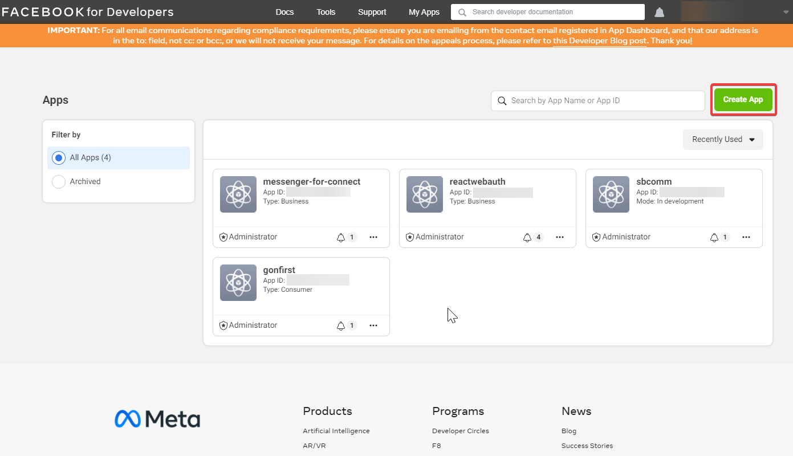
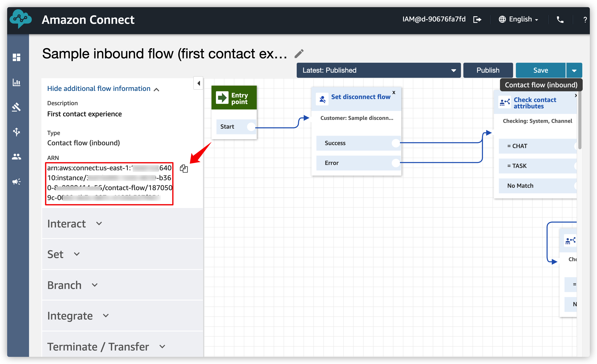

10. Facebook Messenger Chat 결합 1

Amazon Connect Chat 과 연동할 수 있는 클라이언트는 다양합니다. 기본적으로 웹 사이트에 Javascript 형태로 embed 할 수 있습니다. 또한, Social messenger provider 와의 결합도 API 형태로 지원합니다. 여기에서는 Facebook messenger 와 연동을 통해 상담을 할 수 있게 만들어 봅니다.
Facebook messenger 설정
Facebook messenger 설정을 진행합니다. Facebook App 을 만들고, Messenger 기능을 사용 할 수 있도록 설정합니다. 이 Messenger를 통해 Amazon Connect 의 상담사와 대화할 수 있습니다.
- Meta(Facebook) for Developers사이트 https://developers.facebook.com 로 이동합니다.
- My Apps 메뉴를 클릭합니다.
- Create App 메뉴를 클릭합니다.

- Type 으로 Business 를 선택합니다.
- Display name, App Contact Email 정보를 입력하고 Create App 버튼을 클릭합니다.

- Settings -> Basic 메뉴로 이동합니다. Show 버튼을 클릭하고 App Secrect 정보를 복사하여 기록해둡니다. 이후 설정 시 사용할 예정입니다.
- Dashboard 메뉴로 이동합니다. Messenger 항목의 Set up 버튼을 클릭합니다.
-
Create New Page 버튼을 클릭합니다. (새로운 탭이 열립니다.)
-
Page Name, Category 정보를 입력하고 Make a page 버튼을 클릭합니다.
-
다시 이전 탭으로 돌아와서 Add or Remove Pages 를 클릭합니다. 로그인 관련 팝업이 보이고, 위에서 만든 페이지를 선택하며, 기타 설정등을 진행합니다.
- Generate Token 버튼을 클릭하여 Token 정보를 확인합니다. 이 정보는 기록해둡니다.
AWS Secret Manager 설정
- AWS Console 에 접속합니다.
- Secret Manager 서비스로 이동합니다. Store a new secret 버튼을 클릭합니다.
- Other type of secret 을 선택하고, Key/value 로 앞서 기록해 둔 App Secret 정보와 Page Token 정보를 아래와 같이 입력합니다. VERIFY_TOKEN은 임의의 문자열을 입력하고 이를 기록해둡니다. 이후 Next 버튼을 클릭합니다.
- 이후 Secret name 을 입력하고 Next 버튼을 클릭하여 진행합니다.
- 이후 Next 버튼을 클릭하고 Store 버튼을 클릭하여 저장합니다.
- 이후 Secret Manager 초기 화면에서 생성한 Secret 을 선택한 후 Secret ARN 정보를 기록해둡니다.
Amazon Connect Instance 정보 기록
- AWS Console 에서 Amazon Connect 서비스로 이동합니다. 이전 장에서 생성했던 인스턴스를 클릭합니다.
- 아래 ARN 정보를 기록해둡니다.
- 아래 링크를 통해 Connect Console 에 접속합니다.

- Connect Console에 접속한 이후 Contact flows 메뉴로 이동 후, Sample inbound flow (first contact experience) 를 클릭합니다. 아래 화면과 같이 Contact flow ARN 을 복사합니다.

- 위에서 복사한 Contact flow ARN 중에서 아래 강조된 부분과 같이 Contact flow ID 만 복사하여 기록해둡니다. Contact flow ID 는 참고로 이와 같은 형태의 숫자와 문자의 조합입니다. ex) 4893202c-0002-4b3c-887c-4125b523f051
arn:aws:connect:[Region]:[Account ID]:instance/[Amazon Connect Instance ID]/contact-flow/[Contact flow ID]